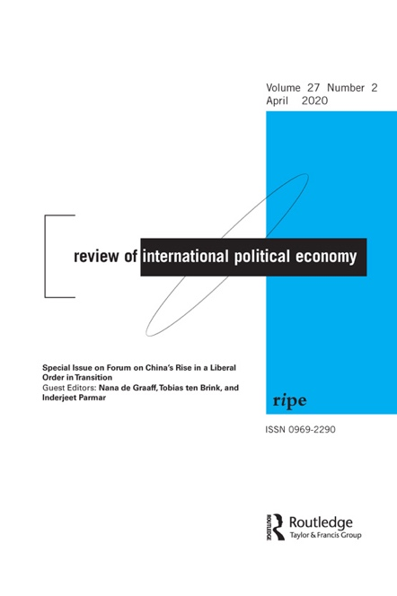
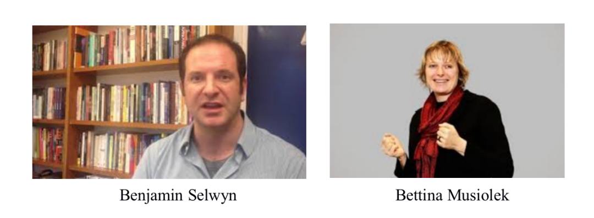
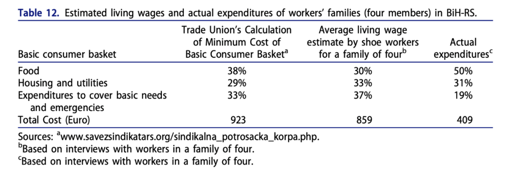

收录于合集

作品简介
【作者】 Benjamin Selwyn，萨塞克斯大学全球研究院教授，研究兴趣为国际政治经济学与发展社会学。Bettina Musiolek，清洁成衣运动（Clean Clothes Campaign）的德国平台的创始人之一，关注商业与人权。Artemisa Ijarja，卡塞尔大学全球政治经济学硕士，清洁成衣运动德国上诉协调员。
【编译】 李玉婷（国政学人编译员，中国人民大学国际政治经济系）
【校对】 王泽尘
【审核】 崔宇涵
【排版】 梁鑫昱
【来源】 Selwyn, B., Musiolek, B., & Ijarja, A. (2020). Making a global poverty chain: export footwear production and gendered labor exploitation in Eastern and Central Europe. Review of International Political Economy, 27 (2), 377-403.

期刊简介

Review of International Political Economy , 国际政治经济学评论，创立于1994年，是一本以国际政治经济学为主要内容的同行学术评审杂志。2018年的影响因子为2.800。
建立全球贫困链：中东欧出口鞋类生产和性别剥削
Making a global poverty chain: export footwear production and gendered labor exploitation in Eastern and Central Europe

文章导读
01
**引言
**
近年来，全球价值链（Global Value Chain,以下简称GVC）和全球生产网络（Global Production Network,以下简称GPN）的研究人员更密切地关注全球经济一体化与工人福利之间的关系。在许多的GVC/GPN的研究中，经济升级被认为是发展中地区的最佳的增长策略，但其实经济和社会降级也是资本积累的一种策略。有研究认为社会降级是全球经济一体化的潜在结果——即贫困化增长（immiserising growth），经济活动的增加，带来了较低的生活水平。但是，以往的研究将升级或者降级认为是企业或者集群决策的结果，忽视了更广泛的社会和制度动力，比如说国家和国际制度在这一过程中的作用。
文章的研究主要基于三个问题：（1）经济和社会降级的过程以及贫困化增长如何以及在多大程度上被性别化？ （2）参与者（国际机构和组织，民族国家，地方和跨国公司）如何导致经济和社会降级和贫困增长的产生？ （3）经济和社会降级和增长缓慢的动力在多大程度上与价值链治理的变化相关？
为此，作者针对中东欧国家鞋类行业的历史轨迹、国家和部门的最低工资，以及国家机构和工会对最低消费篮子成本的计算，进行了桌面研究（desk-based research）。此外，在2015年10月至2015年12月期间，对来自12家私营工厂（每个国家2家工厂）的209名工人进行了半结构化和非结构化的访谈。
利用波兰、罗马尼亚、斯洛伐克、阿尔巴尼亚、马其顿和波黑六个中东欧国家的制鞋业的（主要）女工的工资、劳动条件以及社会再生产/生计策略的原始数据，本文致力于说明经济部门如何通过经济和社会降级而扩张、阐明支持这种扩张的性别劳资关系、并用更加具体的阶级相关性术语将贫困化增长重新定义为基于劳动力剥削和贫困的经济扩张过程。理论上，本文从性别政治经济学角度来分析解释GVC中的就业如何引发贫困，进一步发展了全球贫困链（Global Poverty Chain, 以下简称GPC）的方法。
02
性别全球贫困链分析
Selwyn的GPC方法从理论上分析了全球北方领头企业的产业链布局中的价值捕获机制（mechanism of value capture），而这一机制通常在全球南方供应链的基础上导致高度被剥削与贫困的劳动力的产生。
在GPC方法的基础上，本文建立了一个性别化的政治经济学分析框架，来分析贫困化增长（immiserating growth）的过程与结果。本文通过社会再生产的视角将劳动过程（推动劳动力最大限度地转化为劳动）、可以使企业获得廉价劳动力的劳动制度以及工人的生计策略联系起来。
社会再生产理论明确了资本主义在有偿生产领域和无偿再生产领域的制度差异——再生产为生产经济带来的是外部性收益，并没有反映在市场和价格机制中。在大部分劳动力市场制度的建立过程中，妇女承担了社会再生产的负担。社会再生产活动通过对工人、家庭与社区的外部化实现对资本主义生产的补贴，这正是通过强加给前者的无偿无薪的工作与生活方式实现的。
将劳动力描绘为国家和企业吸引外国投资和/或将自己融入全球生产和贸易循环的资源的说辞背后，是旨在推进拥有大量廉价劳动力的社会结构调整。特别地，女性劳动力在就业中被系统地廉价化。
为了分析工人阶级的贫困，作者选择了工资能够覆盖劳动力价值的指标——即成年工人每天需要3000卡路里才能完成工作、养活自己以及另外两个消费单位（consumption unit，1消费单位=1成人/2儿童）。
03
中东欧的出口鞋类生产
3.1历史背景
在过去的三十年中，中东欧国家的出口鞋类和服装生产经历了双重转变：从中央计划经营转向自由市场经济；从作为俄罗斯经济核心的非外围化的一部分到通过再外围化成为西欧生产网络中的一部分。
（1）东欧的再外围化
二战后苏联将东欧国家纳入其政治经济体系。东欧国家政治和经济权力的集权化使其以前所未有的规模追求快速的工业化与社会转型。
东欧的工业化计划是对苏联重工业战略的补充。东欧国家通过基础设施开发和贸易联系融入了苏联经济，后者是东欧国家原材料和工业产品的主要市场。在这一过程中，为了实现该地区对苏联的经济与政治依赖，苏联对东欧国家的工业化给予支持与补贴——苏联的能源与原材料出口定价过低，而东欧制成品定价过高。
然而该地区的经济转型建立在相对薄弱的基础上，不同于将世界顶级创新纳入其生产体系，并将其领先行业从低端技术升级到高科技的东亚发展中国家，东欧国家仍然相对受限于苏联主导的重工业分工体系。
在这个以苏联为导向的体系中，一个重大的发展是将服装和鞋类生产部分整合到西欧的生产网络中。在20世纪70和80年代，建立了一个有期限的出口加工贸易（OPT）计划，允许中东欧国家在免税进口之前，出口用于组装和缝制的预切割投入品。这种以欧洲经济共同体（EEC）为中心的贸易体系为中东欧国家提供了盈利的机会，也对行业的发展产生了长期的影响。
1989/1991年共产主义崩溃后，该地区进入经济（新）自由化的快速发展时期。这导致经济衰退、失业人口增加，从而形成了一支为过度剥削做好准备的后备劳动力大军。
自中东欧国家尝试再次进入世界市场以来，国际机构一直希望通过增加劳动力市场的灵活性来提高该地区的经济竞争力。国际金融机构还以采用“限制性工资政策”为条件来发放贷款，以降低预算压力并吸引外国直接投资。这些政策的结果是即使失业率下降，工人的工资仍然很低。
（2）出口鞋类生产：从完整包装制造到对外加工贸易
在苏联式的中央计划下，中东欧国家的服装（包括鞋类）生产，从核心工厂到分支工厂再到车间被垂直整合。其中服装部门主要雇佣的是女性。
工业化和创造就业机会促进了中东欧国家政治和经济的合法统治。“社会就业”和“社会工资”被用作将工人束缚于“他们的”工厂的手段，同时纪律和鼓励他们更加努力地工作，并确保劳动力的社会再生产。福利服务是通过工作场所提供的，通常由工厂工会分配。工资只是“提供的全部薪酬和资源的一部分”。企业充当社会服务、餐饮、交通和娱乐设施的提供者”。
共产主义崩溃后，对于服装和鞋类的出口生产部门，OPT计划成为越来越重要的生存策略。现在阿尔巴尼亚、波黑、马其顿、罗马尼亚和斯洛伐克的出口鞋类生产主要在OPT生产关系中进行，只有波兰的企业才能进行完整的包装制造。从中央计划下的全包生产到为中心企业进行组装生产，中东欧国家的这一部门变为劳动密集型产业，而资本密集与高附加值的的活动则集中在欧盟15国内。
3.2区域内外鞋类生产动态
欧洲生产商主导着世界和欧盟鞋类市场中相对昂贵的部分，其平均价格高于非欧洲鞋类生产商。这种质量/价格差异主要由材料和生产的相对复杂性决定。市场的最高价值部分是皮革鞋，几乎占欧洲总产量的80％。非皮革类运动鞋主要在东南亚生产。来自“旧”欧盟的意大利公司和其他公司越来越多地将生产组装活动外包给东欧和中欧。在20世纪90年代，意大利的公司在中东欧国家直接投资建立了其直接拥有的生产设施。
随着外包需求的增加，中东欧国家出现了大量的中小企业，在国家政策的推动下，取代了原有的国有企业。从西欧中心企业到中东欧供应商的细分和外包导致了供应链中供需双方关系的转变。1989年以前，双方关系相对对称，买方公司的成本核算里包括对人工成本的评估。而现在双方的不对称关系里买方更占优势。买方不再参与生产成本的谈判，而是倾向于根据预定的价格和供应方签订合同，使其一次性获得生产产品的款项。为了降低成本，外包公司预先确定投入材料与成本，供应商负责劳动过程及其相关成本。
04
性别剥削下的贫困化增长
本节通过对贫困工资、工作的密集性（work intensification）、危险的工作条件和工人的生计策略来分析出现贫困化增长的原因。
在鞋类部门中，女性是主要的劳动力，而管理人员大多是男人。绝大多数工人完成了中等教育、许多有过职业培训，一些有大学学位。中东欧国家鞋类制造工人大多为四十到六十多岁的中年人。1989年以前就存在的国有企业往往比新的企业提供更好的雇佣合同，某种程度上是由于老工厂仍有工会试图与管理者谈判，而新的工厂里工会比较少见。
在贫困工资（国家和部门最低工资）方面，作为建设相对灵活的劳动力市场的项目的一部分，中东欧国家与国际金融机构和欧盟一起建立了非常低的最低工资标准。文章里所有研究国家/地区的法定最低工资低于平均工资的60％。在新自由主义政策执行有目的的劳动市场分隔，伴随着各部门之间实行的最低工资的差异。政府确定的服装部门的最低工资低于国家规定的法定最低工资。例如，在波黑，前者仅是后者的71％。工资差异也体现在性别中。女制鞋工人的收入低于全国平均工资，远低于相对高薪的、以男性为主的部门，例如石油和焦炭精炼。
其次是工作的密集性。中东欧国家的制鞋业的经济和社会降级伴随着工作日的不断增加。该行业的工人首先需要完成日常任务，然后才会有计件工资。但是作者发现日常任务过高，以至于要达到目标就得加班。而加班是非正式的，因此工人无法得到法定的每小时加薪。此外，周末的工作出现区域常规化，六个国家中有五个国家的工人表示周六时常加班，在阿尔巴尼亚星期六就是工作日。
此外，工人还面临着危险的工作条件。接受采访的大多数工人认为管理层并不在意确保健康、无害的工作环境。关于工作场所的常见抱怨包括：卫生条件差、温度过高或过低、缺乏新鲜空气、噪声和灰尘过多以及保护健康的措施很少（例如使用防护设备和培训如何使用具有潜在危险的机械）。在作者采访的遭受工伤的工人中，大多数人表示没有得到管理人员的任何补偿或帮助，这表明工作的身体压力已被外部化到女工身上。
工人在这些条件下应该如何维护自己的生活呢？在采访中，大多数工人称他们的工资不能满足基本的个人需求，更不用说家人的基本需求。在工人的叙述中，他们无法定期支付水电费、经常错过房租支付以及无法负担该国的家庭假期。对于大多数人来说，假期需要周末烧烤或家庭聚会。他们依靠父母的帮助，或者土地、贷款以及其他形式的财政援助维持生活。下表突出显示了工会与工人对维生工资（living wage）的估计的差异，与工会的计算相比，工人往往低估了他们所需的生活工资要求。

在中东欧国家的制鞋业中，工会难以发挥作用，改善工人的工资和条件。工会没有从共产主义的崩溃中实现重建，这些国家劳动力市场自由化和短期合同的激增是有效动员工会的结构性障碍，用人单位会用解雇威胁工人来减少其对工会的参与，有些工会则倾向于执行已有的合同承诺而不是尝试改善工资和工作条件。
05
**结论
**
GPC的概念是对目前宣传的全球价值链中积极作用的修正。相反，这一脱贫的途径（经济扩张过程）其实是基于劳动剥削和贫穷造成的贫困化增长。本文基于原始的实证材料，论述了中东欧国家的出口鞋类制造业是如何在世界银行、欧盟、西欧的企业、中东欧的出口企业以及中东欧国家的作用下，实现了从有偿劳动剥削制度（compensated labor exploitation）到对大多数女性劳动力的超级剥削（super exploitation），这也造成了中东欧鞋类制造业的经济降级与社会降级。同时，本文基于性别框架对全球南方之外的地区进行GPC分析，丰富了全球贫困链（GPC）的研究。
译者评述
随着跨国公司在全球范围内的直接投资，全球价值链逐渐建立。不同于许多研究关注的跨国公司与国家的角度，本篇文章选择了从劳动力的视角出发，分析全球经济一体化与工人福利的关系。通过对经济转轨后中东欧国家出口鞋类制造企业的双重转变的分析，作者认为全球经济一体化带来的也可能是经济与社会的双重降级——中东欧国家的出口鞋类制造业逐渐只负责组装环节以服务于西欧，工人的福利与工会的作用也大不如前。
本文文章旨在引起对全球经济一体化过程中工人阶级劳动与生活条件的关注，丰富已有的关于全球经济一体化的研究。值得注意的是，作者是通过对比经济转轨前后中央计划下与新自由主义政策下的中东欧国家的制造业与工人工作与生活状况来得出结论的，但是在文章里作者强调的是1989/1991之后的工人处境，对于转型前的工人阶级并没有进行十分深入的对比分析。
本文由国政学人独家编译推荐，文章观点不代表本平台观点，转载请联系授权。

添加 “国小政”微信，获取最新资讯


好好学习，天天“在看”
国政学人
支持学术公益与知识传播
微信扫一扫赞赏作者 __赞赏
已喜欢，对作者说句悄悄话
取消 __
发送给作者
发送
最多40字，当前共字
上一页 1/3 下一页
长按二维码向我转账
支持学术公益与知识传播
受苹果公司新规定影响，微信 iOS 版的赞赏功能被关闭，可通过二维码转账支持公众号。